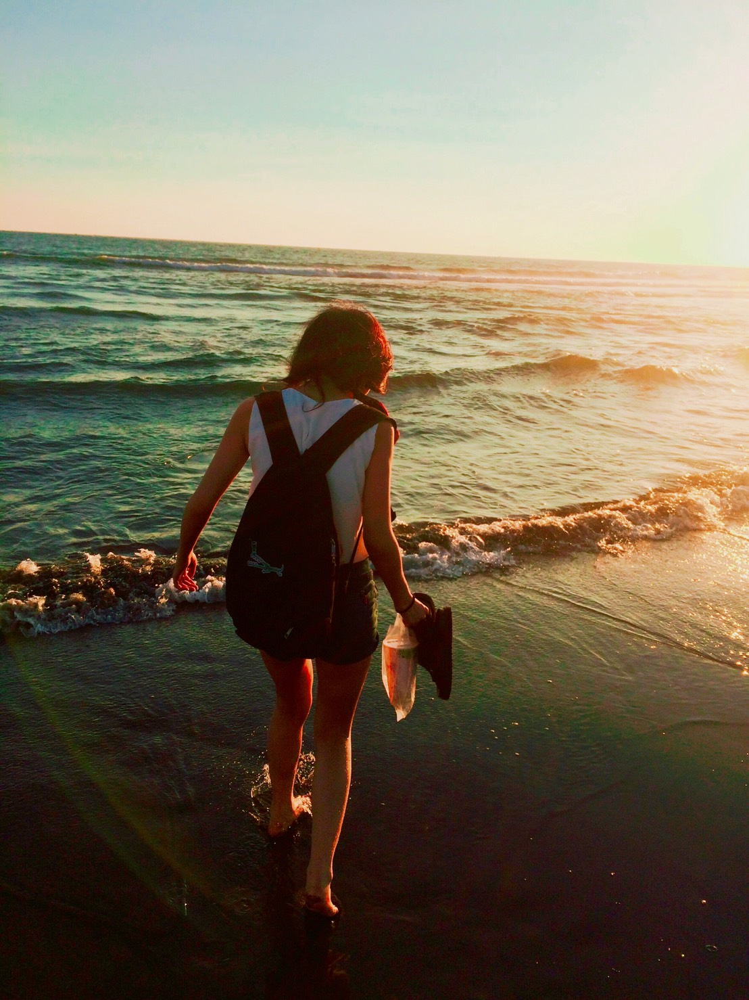
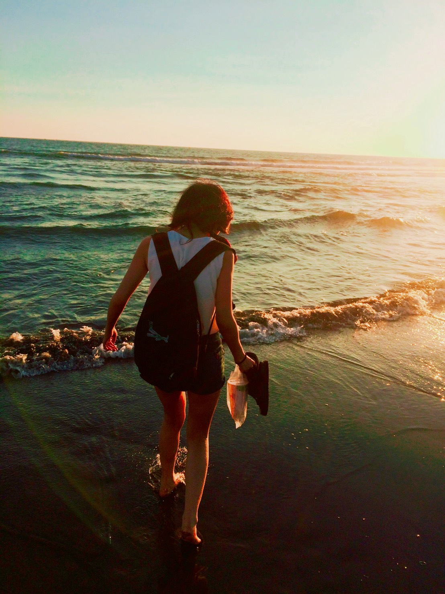

大家的旅記
翔子
遊台中
今天我到了台中的二十號倉庫
，那裡牆壁上的畫風格很獨特，在那裡漫步，沒什麼文藝氣息 的我都覺得我很文青。
之後草悟道去散步，
其實最重要是要看我喜歡的阿薩斯 ，它是一個黑色銅像，手上拿著一把劍、身上披著飄逸 的披風，真的是太吸引我了，讓我深深地愛上了他。 Denny 遊台南
今天到了台南，這裡的太陽真的是名不虛傳的熱啊，所以我二話 不說就去安平買了元氣果汁 ，我買了小 混混，那是柳橙原汁加多酚，口味非常特殊非常好喝。
後來又去了觀夕平台，
傳說中的一線天竟然在這 邊可以看到，非常漂亮，在天和海的交界也看到一些漁船在海面上，又有夕陽在海面上慢慢徘徊，這只 能說是在畫中才能看得到的。 
今天我到了台中的二十號倉庫
，那裡牆壁上的畫風格很獨特，在那裡漫步，沒什麼文藝氣息 的我都覺得我很文青。
之後草悟道去散步，
其實最重要是要看我喜歡的阿薩斯 ，它是一個黑色銅像，手上拿著一把劍、身上披著飄逸 的披風，真的是太吸引我了，讓我深深地愛上了他。 Denny 遊台南
今天到了台南，這裡的太陽真的是名不虛傳的熱啊，所以我二話 不說就去安平買了元氣果汁 ，我買了小 混混，那是柳橙原汁加多酚，口味非常特殊非常好喝。
後來又去了觀夕平台，
傳說中的一線天竟然在這 邊可以看到，非常漂亮，在天和海的交界也看到一些漁船在海面上，又有夕陽在海面上慢慢徘徊，這只 能說是在畫中才能看得到的。 
我要寫遊記